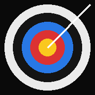

BLE service UUIDs are built in and cannot be changed.
BT off (microphone is the trigger).
BT mode: the microphone is switched off. A BLE message containing "MOT" acts like a mic signal; digits after it (e.g. MOT45) are shown as battery %. Needs Web Bluetooth: Android Chrome or desktop Chrome/Edge (not iPhone/iPad Safari).
AI_trig (pose estimation)
Release is detected from the
Distance is measured from the
Release speed2.0
more sensitiveless sensitive
Off.
Log: off.
AI_trig mode: the microphone is switched off. When the pose shows a full draw followed by a fast release movement (wrist and/or elbow), a clip is recorded exactly like with a MIC / BT / PHONE signal (Sync offset, lockout and AUTO MODE apply). A full draw while a clip is playing stops the replay and shows the live view (the old clip is dropped unless you saved it). Ready-made MediaPipe Pose model: it is downloaded the first time (internet needed once). The camera should see the archer from the side or at 3/4 angle, not from straight above. Release speed is in shoulder widths per second (0.5 = most sensitive, 4 = least); the elbow uses 75 % of it. The blue ring on the pose shows the point the distance is measured from (mouth or nose).
Phone trigger
ROOM CODE
This code is made here, on the looper device. Type it on the sensor phone (MOTION SENDER screen).
Server settings
Server (MQTT over WSS)
Sensor threshold (sensor phone)15.0 m/s²
more sensitiveless sensitive
The MOTION SENDER phone's threshold. It can be changed here or on the sensor phone: both stay the same, the last change wins. A change is sent while PHONE is connected; a sensor phone that connects later gets it too.
Phone trigger off.
PHONE mode: the microphone is switched off. On a second phone open this app, tap MOTION SENDER and enter this room code. Both phones need internet. When the second phone moves faster than its threshold it sends MOT, which acts like a mic signal.
Microphone sensitivity
Threshold–
more sensitiveless sensitive
Sync offset0 ms
Video ring buffer
Length2 s
0.5 s5 s
Signal position1 s before | 1 s after
more aftermore before
Length is the loop time. The second slider moves the signal inside it: seconds before the signal on the left of "|", seconds after on the right. Default: signal in the middle.
AUTO MODE
Signals are also detected while a clip is playing: the next signal replaces the playing clip with the new video (the old one is dropped unless you saved it).
Screen orientation
Locks the screen where the browser allows it (Android). On iPhone/iPad and desktop just rotate the device; the app works in both.
Slow motion
SLOMO_SPEED7 fps
1 fps30 fps
The SLOMO button (bottom of the playback screen) plays the clip at this many frames per second. Press it again for normal speed. Saved videos always keep normal speed.
Playback zoom
Two fingers: pinch to zoom, drag to move. PC: mouse wheel zooms at the cursor; Shift + drag (or right button) moves the picture. The zoom stays for the next clips until you press Reset zoom (top left in playback). SAVE writes the clip with this zoom and offset (and the grid, if shown).
Playback grid
Cell size100 px
Intensity5
Colour
v6.5.0

DD Archery Looper
v6.5.0
Motion Sender
Use this phone as a motion sensor. When its movement goes over the threshold, a trigger is sent to the looper phone. Both phones need internet.
ROOM CODE of the looper device
Type the code shown on the looper device (looper ⚙ → Phone trigger → ROOM CODE). This phone does not make its own code.
Server settings
Server (MQTT over WSS)
Threshold15.0 m/s²
more sensitiveless sensitive
Motion: – m/s²
Last peak: –
This browser cannot go full screen. On iPhone add the app to the Home Screen (Share → Add to Home Screen) and start it from there: then the browser bars are gone.